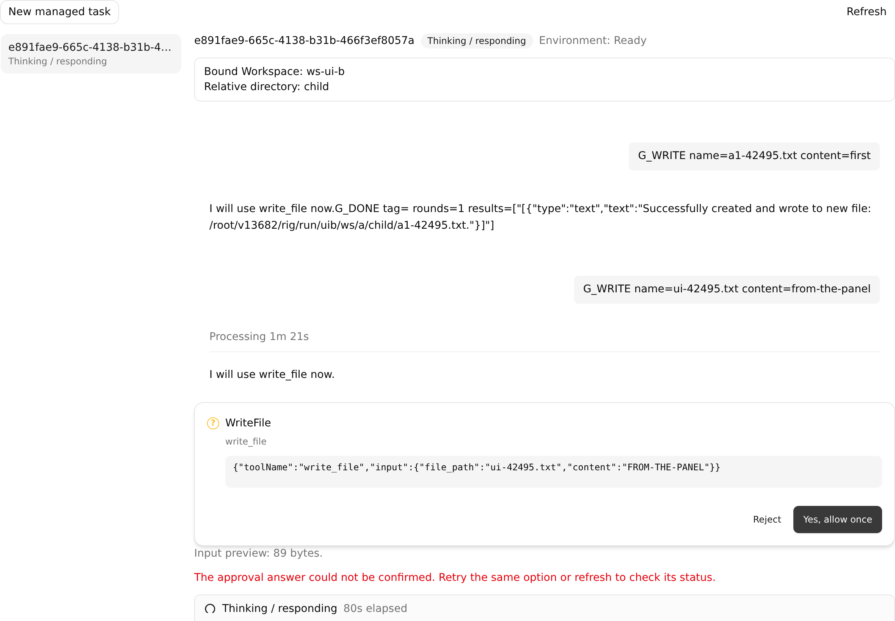
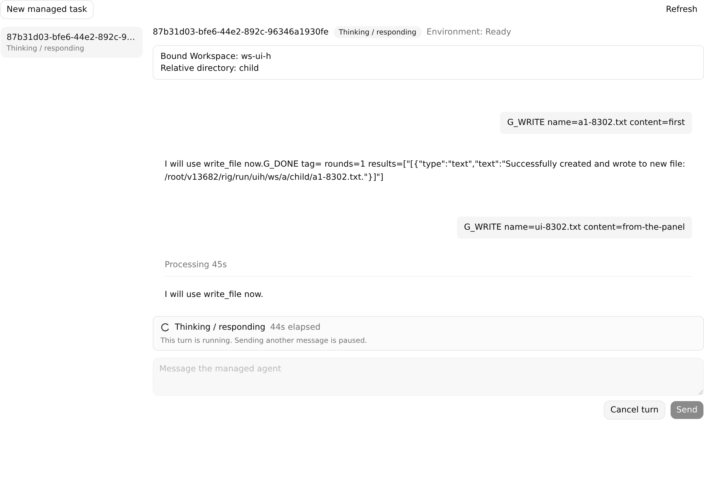

ManagedAgentWebShell of each arm, proxied to that arm's Spring A. Steps: Turn waits on WriteFile approval → Spring A restarted (TERM) → panel opened → "Yes, allow once" clicked → screenshot ≈45–80 s later.
base 2ebbd4e1 The card stays. "The approval answer could not be confirmed." The answer op is still RUNNING after 6 attempts: load → 409 ×8 (hosted_session_already_attached), and no resolve for it reached the Harness.

head 785dc863 The answer is delivered (op COMPLETED, Action decided), so the card is gone. But the Turn is recovery-blocked on the lost runtime session (Broker 404). It spins "Thinking / responding" with no error until cancelled. No file is written.